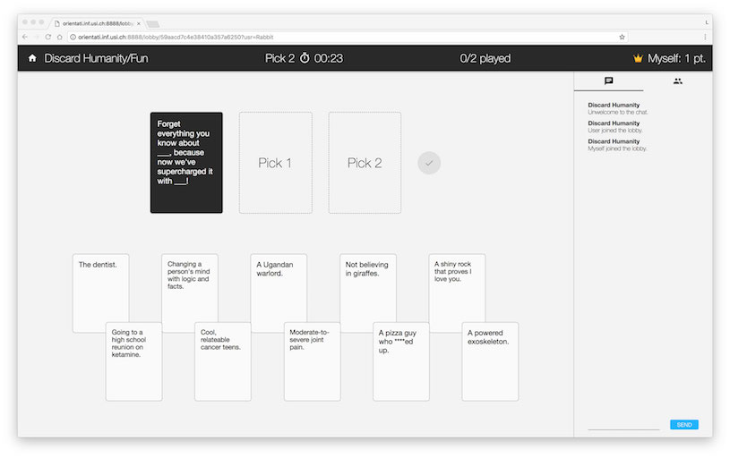
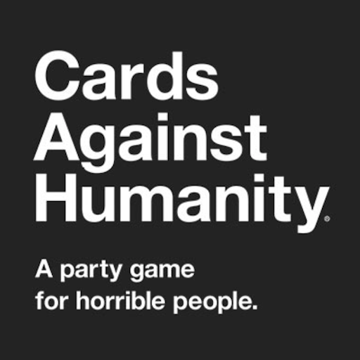
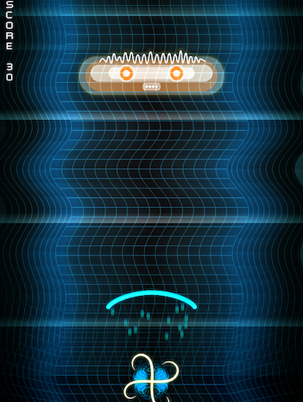
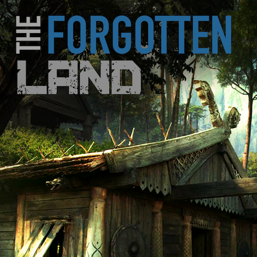

Amedeo Zucchetti
Salut, je suis Amedeo Zucchetti.
Je suis ingénieur informaticien chez WellD à Lugano, Suisse; je suis aussi membre du conseil d'administration de Banana.ch. J'ai étudié informatique à l'USI et histoire et histoire de l'art à Neuchâtel. Pendant mon temps libre, j'aime jouer à unihockey et à jeux de société.
N'hésite pas à me contacter, ou à lire mon CV.
Projets
Une liste de projets sur lesquels j'ai travaillé. Cela conprend logiciels et notes de cours universitaires.
Discard Humanity
Une plate-forme pour jouer à
Cards Against Humanity en ligne avec amis ou étrangers.
Joue ici (pas disponible au moment).

Interface de jeu de Discard Humanity

Logo de Cards Against Humanity
❮
❯
Cards Against Humanity
Cards Against Humanity est un jeu de cartes. Un carte noire vue par tous les joueurs est tirée par le paquet ; elle a un texte avec des parties blanches. Chaque joueur doit choisir une ou plus cartes blanches pour compléter la carte noire. Quand tous ont choisi, le joueur avec la plus drôle (et politiquement incorrecte) combinaison gagne. Après cela, un nouveau tour commence et une nouvelle carte noire est tirée.
Discard Humanity
Discard Humanity a été développé par moi, Lara Bruseghini, Valerie Burgener, Renzo Cotti et Aron Fiechter comme projet pour le cours de Web Atelier à l'USI.
Caractéristiques
- Création et sélection des paquets
- Jeux publics et privés
- Choix de la condition de victoire
- Mode de votation Czar et Démocratie
USI Calculus
Matériel du cours donné par Prof. Michael Bronstein à l'
USI.
SingaSonga
SingaSonga is a game developed during the 2017
Global Game Jam.

Interface de jeu di SingaSonga
❮
❯
La Jam
Une game jam est un événement où les gens se rencontrent pour créer des jeux-vidéo dans un temps limité. Pendant la Global Game Jam 2017, nous avons eu 48 heures pour créer un jeu avec la thématique ondes
. La Global Game Jam a été organisée à niveau global. J'ai participé à l'événement organisé par Steelix Software à la SUPSI à Manno, en Suisse.
Le Team
J'ai travaillé avec Enrico Bottani, Luca Menghini et Daniel Ineichen. Enrico et moi avons programmé, Luca s'est occupé de l'aspect graphique et Daniel a composé la musique. Je n'ai jamais rencontré ces personnes avant la jam, mais il a été pour moi un plaisir de travailler avec eux.
Le Jeu
Le jeu est très simple : des ennemies arrivent par le haut et le joueur doit les éliminer avec des ondes sonores (bleues pour les ennemies bleues, jaunes pour les ennemis marrons).
Le trait distinctif du jeu est la façon dont on active les commandes à travers le microphone. Des sons à volume bas vont lancer des ondes bleues, des sons à volume haut vont émettre des ondes jaunes, alors que des sons continués vont activer un écran protectif. C'est le joueur qui doit trouver le bon balancement entre les sons.
Le Développement
Le jeu a été développé en utilisant Unity. Nous avons commencé à travailler sur le projet vendredi soir, mais c'était seulement le samedi qu'on savait ce qu'on allait faire. Quelc'un entre nous est même resté dormir à la SUPSI afin de continuer à travailler sur le jeu. Nous avons finalement complété le jeu dimanche soir.
Comme nous avons eu temps limité pour le réaliser, le jeu n'est pas parfait. En particulier, nous conseillons à utiliser des écouteurs pour en apprécier la musique, ou éteindre les haut-parleurs, autrement le jeu va jouer tout seul !
The Forgotten Land
The Forgotten Land est un jeu vidéo de stratégie isométrique.

Logo de The Forgotten Land
The Forgotten Land
The Forgotten Land est un jeu vidéo développé par moi, Samuele Bischof, Valerio Battaglia, Alexander Fischer et Francesco Sani pendant notre premier année à l'USI. Le jeu a été développé en utilisant Java, avec libGDX. Le but du jeu est de construire des bâtiments, balancer les ressources et de faire si que la propre civilisation survive le plus long possible.
Études
J'ai étudié informatique à l'Università della Svizzera italiana, à Lugano. J'ai auparavant étudié histoire et histoire de l'art à Neuchâtel, pour lesquelles j'ai obtenu un bachelor en Lettres et sciences humaines.
2015.09-2018.06
Università della Svizzera italiana, Lugano, CH
2012.09-2015.06
Université de Neuchâtel, Neuchâtel, CH
2006.09-2011.06
Liceo cantonale di Lugano 2, Savosa, CH
Expérience Professionnelle
Dans le passé j'ai travaillé pour Banana.ch SA, Hugo Boss, Museo Vincenzo Vela et autres institutions. En 2016 je suis devenu membre du conseil d'administration de Banana.ch afin d'aider et apprendre comment diriger une entreprise. Actuellement je travail chez WellD comme ingénieur informaticien.
2017.12-présent
WellD, Lugano, CH
2016.01-présent
Banana.ch SA, Lugano, CH
2017.09-2017.12
Hugo Boss, Coldrerio, CH
2017.07-2017.09
Università della Svizzera italiana, Lugano, CH
2017.03-2018.06
Università della Svizzera italiana, Lugano, CH
2015.06-2015.09
Museo Vincenzo Vela, Ligornetto, CH
2011.09-2012.03
Home Linde, Tentlingen, CH